|
|
| zoanthids text index | photo index |
| Phylum Cnidaria > Class Anthozoa > Subclass Zoantharia/Hexacorallia > Order Zoanthidea |
| Button
zoanthid Zoanthus sp.* Family Zoanthidae updated Dec 2019
Where seen? Like a carpet of tiny flowers, these animals are often seen on many of our shores, growing on stones and coral rubble, as well as under seagrasses in vast seagrass meadows. They may form a dense carpet that covers large areas of several square metres, making it difficult to walk at low tide without squashing them. Features: Colonies 10-15cm, each polyp about 1cm in diameter. The polyps are embedded in a thin common tissue that is usually hidden by sediments, or joined to one another at the bases by underground stems (called stolons). The long body column raises the small oral disk above the common tissue. Button zoanthids don't incorporate sand in their bodies so the body column feels smooth to the touch. Tentacles short with rounded (not tapered) tips, usually in two rows. The oral disk is smooth, without furrows, although they may have radiating patterns of lines. There is a muscle surrounding the central mouth that makes the oral disk appear to be divided into two halves. Body generally pale blue but oral disk and tentacles in a wide range of colours, often the oral disk is a contrasting colour from the tentacles. Andy Dinesh took a video clip of some zoanthids flourescing under black light! |
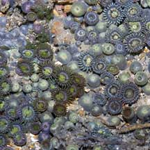 Pulau Sekudu, Aug 04 |
 Pulau Sekudu, Aug 04 |
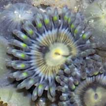 Pulau Sekudu, Aug 04 |
| The
most commonly encountered species of button zoanthids on Singapore
shores are currently Zoanthus sansibaricus and Zoanthus
vietnamensis. Sometimes, the individual polyps are so tightly packed that the polyp takes on a polygonal shape. Such mounds of zoanthids are sometimes mistaken for hard coral. Sometimes confused with sponges, ascidians and other blob-like animals. Here's more on how to tell apart blob-like animals |
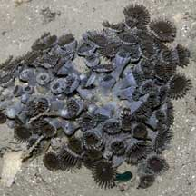 Long body column. Beting Bronok, Jun 06 |
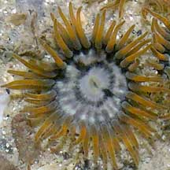 Some have longer tentacles. Labrador, Mar 05 |
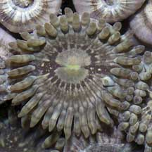 Others have shorter tentacles. Labrador, Jul 05 |
| What do they eat? Button zoanthids harbour microscopic, single-celled symbiotic algae (zooxanthellae) within their bodies. The algae undergo photosynthesis to produce food from sunlight. The food produced is shared with the host, which in return provides the algae with shelter and minerals. Zoanthids may also feed on bacteria, algae and dissolved substances in the water. There are also reports that they may capture edible food bits from the water, while others report that they do not capture plankton. |
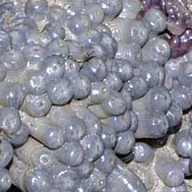 With their tentacles tucked in, they look like blobs or little sausages. Pulau Salu, Aug 10 |
 Sometimes packed so tightly that each polyp is polygonal. Thus mistaken for hard corals. Chek Jawa, May 05 |
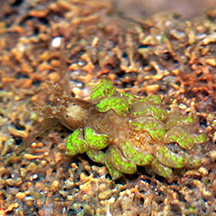 A nudibranch (Baeolidia rieae?) found among these zoanthids. Pulau Semakau South, Feb 16 Photo shared by Toh Chay Hoon on facebook. |
| Status and threats: Button zoanthids are not listed among the threatened animals of Singapore. However, like other animals harvested for the live aquarium trade, most die before they can reach the retailers. Without professional care, most die soon after they are sold. Those that do survive are unlikely to breed successfully. Like other creatures of the intertidal zone, they are affected by human activities such as reclamation and pollution. Trampling by careless visitors, and poaching by hobbyists also have an impact on local populations. |
*Species are difficult to positively identify without close examination.
On this website, they are grouped by external features for convenience of display
| Button zoanthids on Singapore shores |
On wildsingapore
flickr
|
| Other sightings on Singapore shores |
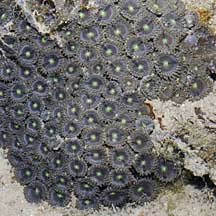 Terumbu Berkas, Jan 10 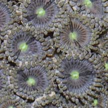 |
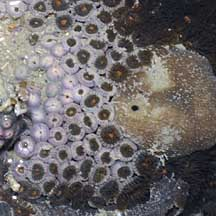 Pulau Biola, Dec 09 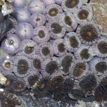 |
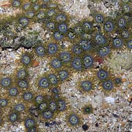 Pulau Salu, Jun 10 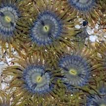 |
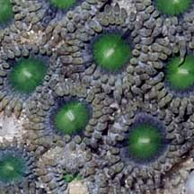 Pulau Pawai, Dec 09 |
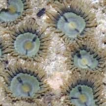 Pulau Pawai, Dec 09 |
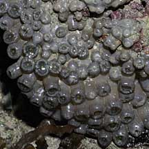 Pulau Sudong, Dec 09 |
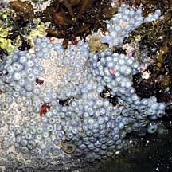 Terumbu Salu, Jan 10 |
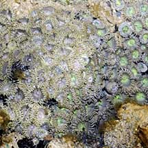 Pulau Berkas, May 10 |
| Acknowlegement With grateful thanks to Dr James Reimer of JAMSTEC (Japan Agency for Marine-Earth Science and Technology) for identifying the zoanthids. References
|